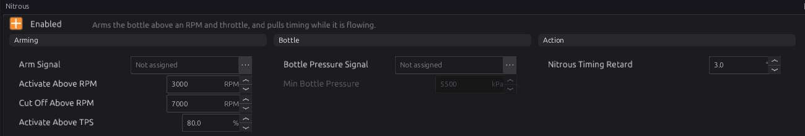
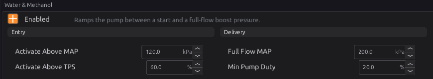
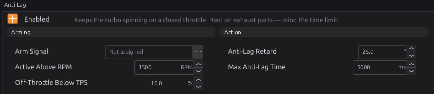

Power adders¶
Intermediate → Advanced
In one sentence: nitrous and water-methanol injection are switched on inside a safe window of engine speed, throttle and boost, and anti-lag retards the timing hard on a closed throttle to keep a turbo spinning — each one only publishes a signal that you give to an output.
What it does¶
Basic
| Module | Publishes | You wire it to |
|---|---|---|
Nitrous (nitrous) |
Nitrous Active nitrous_active, and a timing retard |
the nitrous solenoid(s), through a digital output |
Water & Methanol (wmi) |
WMI Active wmi_active, WMI Duty wmi_duty |
the pump or valve, through a PWM output |
Anti-Lag (anti_lag) |
Anti-Lag Active antilag_active, and a timing retard |
(nothing — the retard is applied by the ignition) |
None of these drives a pin by itself: set up an output for it in chapter 18.
These can destroy an engine
Nitrous adds cylinder pressure faster than anything else, and anti-lag sends burning mixture into the turbine. Set every limit on these pages before enabling them, and watch exhaust temperature and knock.
How it works¶
Intermediate
1 · Nitrous¶
Nitrous is active only while all of these are true:
- Arm Signal is on (not assigned = always, while enabled);
- engine speed between Activate Above RPM (3000) and Cut Off Above RPM (7000);
- throttle above Activate Above TPS (80 %);
- and, if Bottle Pressure Signal is assigned, bottle pressure at least Min Bottle Pressure (5500 kPa, about 800 psi). A pressure sensor that is not reading counts as too low.
While it is active, Nitrous Timing Retard (default 3°) is taken off the spark advance, and it is published from the same condition as the solenoid, so the solenoid can never open without it.
Fuel. The module adds no fuel. With a wet kit (the kit's own fuel solenoid) that is right.
With a dry kit, the extra fuel has to come from the ECU: point one of the four Generic
Correction fuel tables at nitrous_active (chapter 19), or use a Lua script (chapter 35).
Bottle pressure sensors (Nitrous Pressure 1–3, and CO2 Bottle Pressure in chapter 24) are the High Pressure sensor type: whole kPa, calibrated up to 32767 kPa (about 4750 psi). The default calibration suits the common 0.5–4.5 V, 0–1500 psi transducer (0–10342 kPa); check it against yours in chapter 17.

2 · Water-methanol injection¶
WMI is active when manifold pressure is at least Activate Above MAP (120 kPa absolute — about 20 kPa of boost at sea level) and the throttle is above Activate Above TPS (60 %). While active, the duty ramps in a straight line from Min Pump Duty (20 %) at Activate Above MAP to 100 % at Full Flow MAP (200 kPa absolute).

MAP here is absolute pressure: 100 kPa is atmospheric, so boost is MAP minus about 100.
3 · Anti-lag¶
Anti-lag holds Anti-Lag Retard (default 25°) while:
- Arm Signal is on (not assigned = always, while enabled);
- the throttle is below Off-Throttle Below TPS (10 %);
- engine speed above Active Above RPM (3500).
It stops after Max Anti-Lag Time (5 s) of continuous use, and re-arms only when one of the conditions has gone false (the throttle opens, for example).
This anti-lag is timing only: it retards the spark so the mixture is still burning when the exhaust valve opens. It does not open the throttle or an air bypass valve by itself; on a closed throttle the engine has only the air that leaks past the plate and through the idle valve.

4 · How the retards combine¶
The nitrous and anti-lag retards are added to knock, protection and traction-control retard and taken off the advance together (chapter 20).
Before you start¶
Basic
- Nitrous: a solenoid on a digital output that can carry its current (use a relay for large solenoids — chapter 12); an arm switch as a sensor; a bottle pressure sensor if you want the pressure check.
- WMI: a pump or valve on a PWM output; a MAP sensor.
- Anti-lag: an arm switch; exhaust temperature sensors are strongly recommended (chapter 29, EGT protection).
Setting it up¶
Intermediate
- Nitrous: tick Enabled; assign Arm Signal to your arm switch; set the RPM and throttle
window and the retard; assign Bottle Pressure Signal if fitted. Give an output (Generic,
Digital) the condition Turn On When
nitrous_active > 0. - WMI: tick Enabled; set Activate Above MAP a little above where boost builds and Full
Flow MAP at your peak boost. Give a PWM output the candidate
wmi_duty. - Anti-lag: tick Enabled; assign Arm Signal (treat it as required); set the RPM, throttle and time limits.
Worked examples¶
Intermediate
Example 1 — a 75 hp wet nitrous kit
Arm Signal = dash arm switch; Activate Above RPM 3500; Cut Off Above RPM 6800; Activate Above TPS
90 %; Nitrous Timing Retard 3°; Bottle Pressure Signal = Nitrous Pressure 1, Min 5500 kPa. An
output drives the nitrous and fuel solenoids together from nitrous_active.
Example 2 — water-methanol on a turbo engine
Activate Above MAP 150 kPa, Full Flow MAP 230 kPa, Activate Above TPS 50 %, Min Pump Duty 30 %.
Example 3 — anti-lag on a switch for rally stages
Arm Signal = the ALS switch; Active Above RPM 4000; Off-Throttle Below TPS 5 %; Anti-Lag Retard 20°; Max Anti-Lag Time 3000 ms.
Tuning it¶
Advanced
- Nitrous retard: a common starting point is about 2° for every 50 hp of nitrous; check for knock.
- WMI: adjust Min Pump Duty so the spray starts gently; log
wmi_dutyagainst boost. - Anti-lag: start with less retard and a short time limit; watch exhaust temperature closely.
Diagnostics¶
Intermediate
These modules set no codes of their own. The bottle pressure sensors have their own sensor codes
(chapter 17). Live channels: nitrous_active, nitrous_retard, wmi_active, wmi_duty,
antilag_active, antilag_retard.
Troubleshooting¶
Basic → Advanced
| Symptom | Likely causes | Check |
|---|---|---|
| Nitrous never activates | Arm switch off; RPM or throttle outside the window; bottle pressure low or sensor not reading | nitrous_active; the window; the pressure sensor |
| Bottle pressure reads far too low | Sensor calibration; the sensor not set to High Pressure | Chapter 17 |
| WMI pump runs at part throttle | Activate Above TPS too low | Raise it |
| WMI never runs | MAP never reaches Activate Above MAP (absolute) | map; 100 kPa is atmospheric |
| Anti-lag stops after a few seconds | Max Anti-Lag Time | Intended; raise with care |
Settings reference¶
Nitrous:
| Setting | What it does |
|---|---|
Nitrous Enablednitrous.enabledRange: Off or On Default: Off |
Arm the nitrous system: publishes nitrous_active for the solenoid and nitrous_retard for the timing pull. Every gate below is ANDed, so the system only opens inside the whole window at once — and the timing retard is published from the same condition, so the solenoid can never open without the retard following it. |
Arm Signalnitrous.arm_sigRange: -1 to 32767 Default: -1 |
Arming switch. Not assigned = always armed when enabled. |
Activate Above RPMnitrous.min_rpmRange: 0 to 12000 Default: 3000 Units: RPM |
Do not spray below this RPM. Nitrous adds cylinder pressure faster than anything else available, and at low RPM the engine has neither the airflow nor the rod speed to survive it — this is a mechanical limit, not a driveability preference. |
Cut Off Above RPMnitrous.max_rpmRange: 0 to 12000 Default: 7000 Units: RPM |
Stop spraying above this RPM. Beyond it the bottle cannot keep up with the engine's demand and the mixture leans out under the extra oxygen, which is the classic way a nitrous engine is destroyed at the top of a run. |
Activate Above TPSnitrous.min_tpsRange: 0.0 to 100.0 Default: 80.0 Units: % |
Nitrous only at (near) wide-open throttle. |
Bottle Pressure Signalnitrous.pressure_srcRange: -1 to 32767 Default: -1 |
Bottle pressure sensor. Not assigned = no pressure check. |
Min Bottle Pressurenitrous.min_pressure_kpaRange: 0 to 30000 Default: 5500 Units: kPa |
Refuse to spray below this bottle pressure. A nitrous bottle is normally run at about 900-1000 psi (6200-6900 kPa); below roughly 800 psi (5500 kPa) the flow falls away and the mixture goes lean, which is the dangerous direction. Only checked when a Bottle Pressure Signal is assigned. |
Nitrous Timing Retardnitrous.retard_degRange: 0.0 to 30.0 Default: 3.0 Units: deg |
Timing pulled the whole time nitrous is active. The extra oxygen makes the charge burn far faster, so the timing that was correct on petrol alone is now far too advanced — this retard is what keeps peak pressure after TDC. It is published from the same condition as the solenoid, so it can never be forgotten. |
Water & Methanol:
| Setting | What it does |
|---|---|
WMI Enabledwmi.enabledRange: Off or On Default: Off |
Water/methanol injection: a duty ramped with manifold pressure, gated on throttle. The module publishes wmi_active and wmi_duty only — the pump or solenoid is driven by mapping an output to them. |
Activate Above MAPwmi.min_map_kpaRange: 0.0 to 600.0 Default: 120.0 Units: kPa |
Boost onset (MAP) where injection starts. |
Full Flow MAPwmi.full_map_kpaRange: 0.0 to 600.0 Default: 200.0 Units: kPa |
MAP at which duty reaches 100%. |
Activate Above TPSwmi.min_tpsRange: 0.0 to 100.0 Default: 60.0 Units: % |
Throttle floor for injecting at all. It is a plain gate ANDed with the MAP threshold, not part of the ramp: below it the duty is zero however high the boost, which keeps the system off during an overrun spike where the pressure is momentarily up but the engine is not being asked for anything. |
Min Pump Dutywmi.min_duty_pctRange: 0.0 to 100.0 Default: 20.0 Units: % |
Duty at the boost-onset threshold (ramps to 100% at Full Flow MAP). |
Anti-Lag:
| Setting | What it does |
|---|---|
Anti-Lag Enabledanti_lag.enabledRange: Off or On Default: Off |
Keep the turbo spooled off-throttle by retarding ignition hard, so combustion finishes in the exhaust. Destructive by nature — it dumps heat into the turbine and exhaust valves — hence the arming signal and the hard time limit; treat both as required, not optional. |
Arm Signalanti_lag.arm_sigRange: -1 to 32767 Default: -1 |
Arming switch. Not assigned = always armed when enabled. |
Active Above RPManti_lag.min_rpmRange: 0 to 12000 Default: 3500 Units: RPM |
Only hold anti-lag above this RPM. Below it there is not enough exhaust energy for the trick to work and the retard is simply an engine trying to stall, so the module releases instead. |
Off-Throttle Below TPSanti_lag.max_tpsRange: 0.0 to 100.0 Default: 10.0 Units: % |
Only when the throttle is (near) closed. |
Anti-Lag Retardanti_lag.retard_degRange: 0.0 to 50.0 Default: 25.0 Units: deg |
How much timing is pulled while anti-lag holds. This is the whole mechanism: retard moves the burn late enough that it is still going when the exhaust valve opens. More retard spools harder and heats the turbine faster — this number and the time limit are the same trade-off seen from two ends. |
Max Anti-Lag Timeanti_lag.max_time_msRange: 0 to 20000 Default: 5000 Units: ms |
Max continuous anti-lag per activation (turbo protection). |
Related¶
- Chapter 12 — Wiring outputs
- Chapter 17 — Sensors (bottle pressure sensors)
- Chapter 18 — Outputs and the pin system
- Chapter 20 — Ignition (how retards combine)
- Chapter 29 — Engine protection (EGT protection)